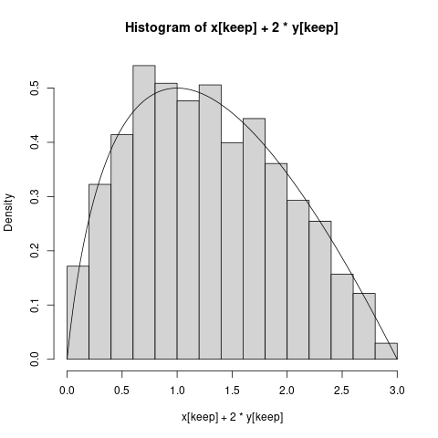

[Home]
In all the solutions below part of the text is written in handwriting style.
This is the part that a student may write in the exam (along with the relevant diagrams).
Here $(X,Y)\sim Unif(S),$ where $S=\{(x,y)~:~x\in[0,1],~y\in[x^2,x]\}.$ To find the desnity of $X+2Y.$
The first thing you should do here is to make a sketch of the region $S.$
Then decide the support of $X+2Y.$
Here $X+2Y$ must lie in $[0,3].$
You are starting with a bivariate distribution, and want to arrive at an univariate one. So our modus operandi could be
to first use the Jacobian method to
transform from $(X,Y)$ to some $(U,V),$ where either $U$ or $V$ is the random variable of our interest.
Then we can integrate out the other variable.
For the Jacobian part we need a bijection:
Let $U = X+2Y$ and $V = Y.$
You could have chosen $V = X$ also. I chose $Y$ so that I could avoid dividing by $2$ in the inverse.
Before you start algebraic manipulations, you should visualise the transform. Here $(1,0)\mapsto (1,0)$ and $(0,1)\mapsto (2,1).$
So the graph paper transforms as follows.
|
| The red dot of the original graph goes to the blue dot in the new graph |
So our region of interest should transform as shown below.
Or original distribution was uniform, the transform is linear (so no uneven stretching). Hence $(U,V)$ must be uniform
over the green region.
First we find the inverse map (proving as a side effect that the transform is a bijection):
We have $X = U-2V$ and $Y = V,$ ie
$$\left[\begin{array}{ccccccccccc}X\\Y
\end{array}\right] = \left[\begin{array}{ccccccccccc}1 & -2\\0& 1
\end{array}\right]\left[\begin{array}{ccccccccccc}U\\V
\end{array}\right]$$
Thus, the map $(X,Y)\mapsto (U,V)$ is bijective.
Since it is linear, the Jacobian is just the matrix $\left[\begin{array}{ccccccccccc}1 & -2\\0 & 1
\end{array}\right],$ which has determinant 1.
So there is no change in area.
Let's work out the the density of $(X,Y).$
Now the joint density of $(X,Y)$ is $f_{X,Y}(x,y) =\left\{\begin{array}{ll}6&\text{if }(x,y)\in S\\ 0&\text{otherwise.}\end{array}\right., $
since area of $S$ is $\int_0^1 (x-x^2)\, dx = \frac 12-\frac 13 = \frac 16.$
So we can apply the Jacobian transform to get the new density for $(U,V).$
So the joint density of $(U,V)$ is $f_{U,V}(u,v) = f_{X,Y}(u-2v, v) = \left\{\begin{array}{ll}6&\text{if }(u-2v,v)\in S\\ 0&\text{otherwise.}\end{array}\right..$
We now need a new name for the green region.
Let $T = \{(u,v)~:~(u-2v,v)\in S\}.$
We are now to integrate over $v.$
This amounts to finding the length
of the thick part of the vertical line through $u.$ Understand this well before reading the
algebraic manipulations below.
For a given $u\in[0,3]$ we need to find the two end points of the thick segment. The upper end point is obviously $v = u/3.$
To find the lower end point ($A$) we need to see where the $y = x^2$ curve is in the $(u,v)$-plane. This
curve will intersect the vertical line through $u$ at two points ($A$ and $B$). The diagram shows that
we need the lower one.
$y = x^2$ becomes $v = (u-2v)^2.$
We may write this as a quadratic in $u$ or as a quadratic in $v.$ But since we need to find $v$ for a given
$u,$ we shall prefer the latter.
This is $4v^2-(4u+1)v+u^2 = 0.$
Hence $v = \frac{4u+1\pm\sqrt{8u+1}}{8}.$
Keeping only the smaller root, we have
$v = \frac{4u+1-\sqrt{8u+1}}{8}.$
So the thick line segment has length
$$\frac u3- \frac{4u+1-\sqrt{8u+1}}{8}.$$
Since the density is the constant $6$ over the green region, the required marginal density is
$$f_U(u) = \int_{- \infty}^ \infty f_{U,V}(u,v) dv = \left\{\begin{array}{ll}6\left(\frac u3- \frac{4u+1-\sqrt{8u+1}}{8}\right)&\text{if }u\in[0,3]\\ 0&\text{otherwise.}\end{array}\right..$$
x = runif(10000)
y = runif(10000)
keep = (x >= y) & (y >= x*x)
png('image/midoverlay.png')
hist(x[keep]+2*y[keep],prob=T)
f = function(u) {
6*(u/3-(4*u+1-sqrt(8*u+1))/8)
}
curve(f(x),add=T)
dev.off()
You may like to carefully at the code to learn how we simulated from $Unif(S).$
Here is the resulting plot:
 |
| Pretty good fit! |
$\newcommand{\x}[1]{X_{(#1)}}$
Here we are to find the joint density of $(X_{(2)}, X_{(5)})$ where $X_1,...,X_5$ are iid $Unif(0,1).$
We shall start by finding the joint distribution function, $F(a,b) = P(\x 2\leq a, \x 5\leq b)$, and then differentiate
it partially wrt $a,b$ to obtain the required density.
Clearly, $(\x 2, \x 5)$ can take values in $S=\{(a,b)~:~ 0\leq a \leq b\leq 1\}.$ So the required joint density
must vanish outside $S$.
Let $(a,b)\in S.$
Let $F(a,b) = P(\x 2\leq a, \x 5\leq b).$
Then $\{\x 2 \leq a, \x 5\leq b\}$ means all the $X_i$'s are in $[0 b],$ and at
least two are in $[0, a].$
If the number of $X_i$'s in $[0, a]$ is $k$, then the remaining $5-k$ are in $(a, b].$
Pick the $k$ of the $5$ $X_i$'s: $\binom 5 2$ ways.
Put them in $[0,a]:$ $a^k.$
Put the remaining $5-k$ in $(a, b]:$ $(b-a)^{5-k}.$
So $F(a,b) = b^5- \underbrace{(b-a)^5}_{k=0}-\underbrace{5 a(b-a)^4}_{k=1}.$
Hence $f(a,b) = \frac{\partial^2}{\partial a\partial b} F(a,b) =\cdots=60 a(b-a)^2.$
Thus the required joint density is
$$f(a,b) = \left\{\begin{array}{ll}60a(b-a)^2&\text{if }0<a<b<1\\ 0&\text{otherwise.}\end{array}\right.. $$
Since $Y|X=x\sim Unif(0,x),$ hence $E(Y|X) = \frac X2.$
By the tower property, $E(Y) = E(E(Y|X)) = E\left(\frac X2\right) = \frac 12 E(X) = \frac 12,$ since $X\sim Expo(1),$ and
hence $E(X) = 1.$
Let $Z =\left\{\begin{array}{ll}1&\text{if }Y< X\\ 0&\text{otherwise.}\end{array}\right.. $
Then $P(X< Y)= E(Z).$
Now $E(Z|X) = 1,$ since $Y|X=x\sim Unif(0,x).$
So, by the tower property, $P(X < Y) = E(Z) = E(E(Z|X)) = 1.$